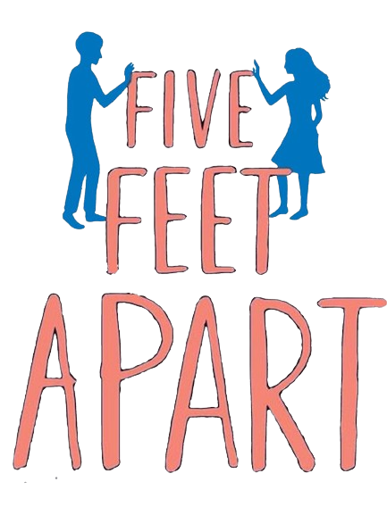

TRAGIC CATEGORY

Titanic
Release date:
February 4, 1998
Director:
James Cameron
Cast:
Kate Winslet | Leonardo DiCaprio | Billy Zane
Watch Trailer
The Green Mile
Release date:
March 15, 2000
Director:
Frank Darabont
Cast:
Michael Clarke Duncan | Tom Hanks | David Morse
Watch Trailer
All the Bright Places
Release date:
February 28, 2020
Director:
Brett Haley
Cast:
Justice Smith | Elle Fanning | Felix Mallard
Watch Trailer
Five Feet Apart
Release date:
March 15, 2019
Director:
Justin Baldoni
Cast:
Haley Lu Richardson | Cole Sprouse | Moises Arias
Watch Trailer
A Walk To Remember
Release date:
January 25, 2002
Director:
Adam Shankman
Cast:
Mandy Moore | Shane West | Lauren German
Watch Trailer